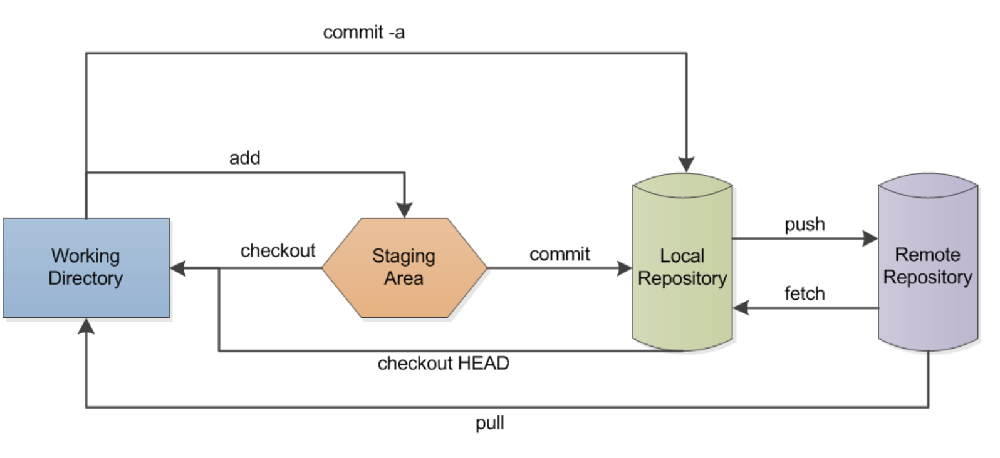
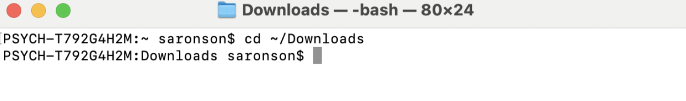
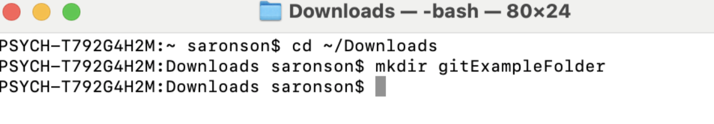
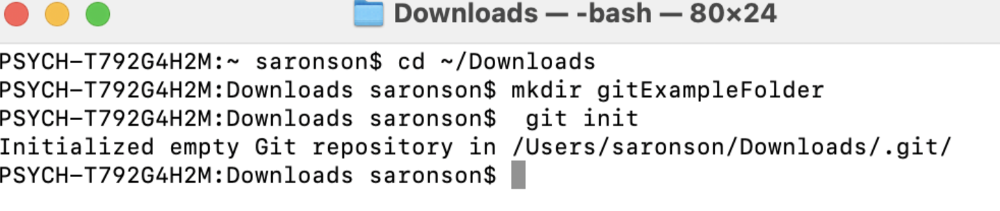
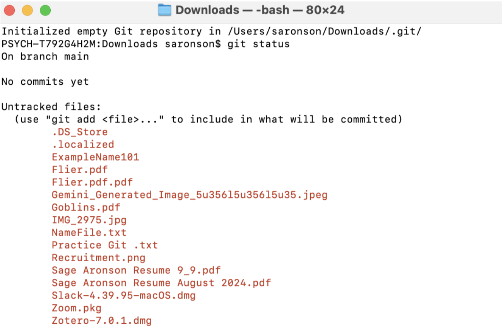
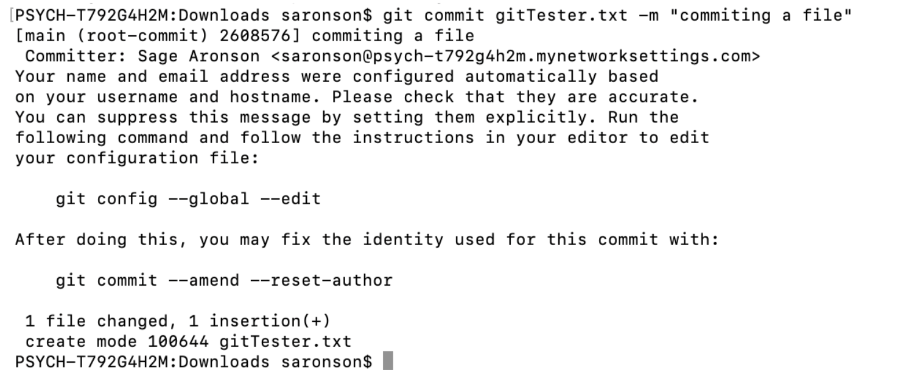
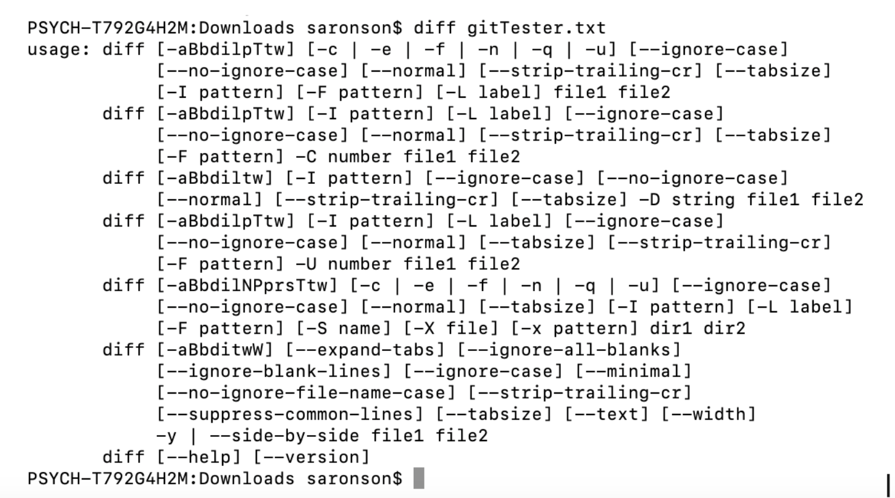

7 Git and Version Control
Introduction to Version Control
Version control tracks changes to files over time. This becomes crucial as projects grow in size and complexity. Version control systems facilitate collaboration among team members, ensure traceability of file and data changes and support reproducibility by maintaining previous versions in case a file becomes corrupted. They are also important for individual programmers - since they keep track of the history of a project, a programmer can refer back to previous versions, comments and changes to better understand what they were thinking several months ago. Version control is not just for programmers—it is useful for any digital project that evolves over time. For instance, even when writing this open-source textbook version control is being employed under the hood.
Local Version Control
A local version control system maintains a database of all changes to files, stored on your local computer. Every change made to a file is recorded as a patch in this database, with each patch containing details about the changes since the last version. However, because all information is stored locally on a user’s computer, this approach presents challenges: it limits collaboration, as others cannot easily access or contribute to the files, and if the local database is lost, there is no backup to recover the information.
Centralized Version Control System
For the sake of simplicity, we will not discuss centralized version control. If you want to learn more you can refer to this resource.
Distributed Version Control System
In a distributed system, each individual maintains their own complete copy of the repository, including the entire version history, unlike a centralized system where each client is dependent on being connected to a single server that holds the repository of all the code. This method is more convenient for clients as each individual can work locally and disconnect from one main server. After the client has committed the necessary changes, they can push their code back to the main repository.
Git
Git is an open-source, distributed version control system. It allows multiple developers to collaborate on a project without causing conflicts between each developer’s code (assuming there are no collisions). Git also maintains a complete history of all code modifications, ensuring that changes can be tracked and reverted if necessary.
GitHub
GitHub is a web-based platform that leverages the Git version control system to allow developers to manage, access, and contribute to open-source software and code. As an open-source platform, GitHub enables anyone to participate in and contribute. It allows developers to work simultaneously on different parts of a project, ensuring that all changes are tracked and saved, which is essential for maintaining the integrity and progress of complex projects. Furthermore, one’s Github profile acts as a sort of portfolio of one’s work which can be a way of advertising oneself in a professional network.
We will now discuss key components, terms and actions that a user must know to effectively navigate Git.
What is a Repository?
In Git, a repository (or “repo”) is the central location where all the files and the complete history of changes for a project are stored. The repository is essential for managing and tracking all work related to the project, serving as a collection of customized code. There are two types of repositories:
- Local Repository: This is stored on an individual user’s local machine, allowing them to work independently.
- Remote Repository: This is hosted on a remote server, either online or on an off-site server, and is shared among multiple collaborators.
Initializing a Git Repository
Git Workflow

(Lbhtw, 2011)If Git is not already installed on your computer, download and install for the appropriate operating system that corresponds to your device.
To install Git on a Linux (Ubuntu/Debian), type the following into the terminal:
sudo apt install git
To install Git on a Mac, we recommend following these instructions.
To install Git on a Windows computer, you can download the software here
When starting a new project, initializing a repository is the first step. Open the Terminal or Command Prompt:
- On macOS/Linux: Open the terminal.
- On Windows: Open the command prompt.
Use the cd command to move to the directory where your project files are located.
Run the command git init. This creates a new .git directory within your project folder, which contains all the necessary files for version control. By default, the .git directory is hidden (any file or directory starting with a dot is hidden in Unix-based systems). Therefore, running the typical ls command will not display it. To view hidden files, you need to use the ls -la command, which will show all files, including hidden ones, such as the .git directory.
Use the command git add to add all files in the current directory to the repository. If you want to add specific files, you can specify them individually with git add <filename>. Alternatively, you can use git add . to stage all files in the current directory and any subdirectories for committing. Staging a file means storing it in an intermediary location before being committed to the repository.
Once all the necessary files have been added, it is important to save these changes by creating a commit. Run the command: git commit -m "Initial commit". The -m flag allows you to add a descriptive message about the commit, in this case labeling it as the “Initial commit.” When committing your own files, you would replace “Initial commit” with a message describing the changes you made (e.g., “Updated documentation” or “Added ContrastNormalizedCode.py”). It is important to include a descriptive message to make the purpose of the commit clear for yourself at a later date and other developers.
Commits
A commit is a snapshot of a user’s project at a specific point in time. It represents a set of changes that have been made to a set of files in the repository. When a user implements the commit command, Git updates the file information, saving the new changes in addition to the metadata (the author of the commit, the time of the commit, and a message describing the changes that have been made). It is a best practice to regularly submit commits to Git so that the repository is updated for yourself and fellow collaborators, just as you would hit the save button frequently in a Microsoft Word document. Remember that commiting is a two step process: first the files need to be added, then they need to be committed.
Cloning a Repository
In some cases, instead of initializing a new repository, you may need to clone an existing one. Cloning a repository creates a local copy of a remote repository, complete with all its history, branches, and files.
To clone a repository, use the command: git clone <repository-url> Where the URL is taken from GitHub.
Cloning is useful when you want to work on a project that already exists on a remote server and collaborate with other team members.
Branches
Branches are a feature of Git that enable users to break off from the main line of development and work on different aspects of the projects simultaneously. Each branch is independent of each other meaning that users can experiment with the code in each branch without conflicting with the progress of other developers. In essence a branch in Git points to a specific commit within the repository.
To create a new branch enter the following code:git branch <branchName>
To switch from one branch to another branch: git checkout <branchName>
There are several, more advanced ways to go about the branching process. For more information refer to this source.
Merging
After completing changes on one branch, you can merge it back into another branch to integrate your work with others’. Typically, a user would merge changes back into the main branch (often called “main” or “master”), where the code is prepared for deployment.
In essence, the git merge command allows a user to combine the changes from different branches, resulting in a unified commit history. Git usually handles the merge process automatically. However, if there are conflicting changes—such as two pieces of the same code being modified in each branch—a merge conflict occurs. In such cases, Git cannot automatically merge the branches and will require manual intervention to resolve the conflicts. Merge commits have two parent commits, reflecting the two branches that were combined. This process demonstrates Git’s version control capabilities.
Before executing a merge, a user must follow a few key steps:
- Use the
git statuscommand to verify that you are on the intended branch. Ensure that HEAD is pointing to the correct merge-receiving branch (the branch where you intend to apply the changes). HEAD refers to the current branch or commit you are working on. - Ensure that both the receiving branch and the current branch are up-to-date with their most recent changes. To do this, use the
git fetchcommand to pull the latest commits into the current branch. You can also usegit pullto ensure that the main branch is up-to-date. - Once you have completed steps 1 and 2 above, you are ready to execute the
git mergecommand.
Pull Requests
Pull requests are a way that developers notify one another when they have completed a feature of the code. After a developer has completed their feature branch, they make a pull request which notifies all the other team members that their code is ready for review in the main branch. The pull request is simply a notification and one of the powerful collaboration tools incorporated within git.
Example of a Git Workflow
Create a designated folder on your local computer to create your Git repository.
Navigate to a known space on your computer (downloads, desktop etc): use the terminal command
cdto enter that location.
Then use the command
mkdirfollowed by the name of the folder you want to create.
Enter
git initto initialize an empty Git repository in that folder.

Create a file (e.g. in Google Docs) and download it as a
.txtfile. Move this file into your Git repository (drag it in).Enter the command git status to see the status of your Git repository. It should say “On branch main” and “No commits yet.”

6. Add the file to your repository with the command git add<filename>
 Now we want to commit that file to our repository. Enter the command git commit
Now we want to commit that file to our repository. Enter the command git commit <filename> -m followed by a short message explaining what you’re doing like “commiting a text file” in quotes.

7. Now open your text file, make some changes, and save them. 8. Then use the diff command to determine the differences between the files.
Git Cheat Sheet
Basic Commands
| Command | Function |
|---|---|
git init |
Initializes a git repository in the current directory. Optional <directory> argument to create repository elsewhere. |
git config |
Configures your settings. Using git config --list will display current settings. |
git status |
Lists which files are staged, unstaged, and untracked. |
git log |
Display the entire commit history using the default format. |
git diff |
Shows untracked changes in your files. |
Making Local Changes
| Command | Function |
|---|---|
git add <file> |
Stage changes in <file> for the next commit. <file> can be a directory, provided it is not empty. |
git commit -m "<message>" |
Commit the staged changes and use <message> for the commit message. |
Remote Repositories
| Command | Function |
|---|---|
git clone <URL> <directory> |
Clones a repository located at <URL> into the <localDirectory> of user’s machine. |
git remote add origin <URL> |
Create a new connection to a remote repo. “origin” is a common name, but any word can be used. |
git pull origin main |
Fetch the remote repository’s copy of repo and merge it into the local copy. |
git push origin main |
Push the local copy of the repo to the remote repository. |
File Structure
| Command | Function |
|---|---|
git rm <file> |
Deletes file from project and stages the removal for commit. (Opposite of add.) |
git mv <oldPath> <newPath> |
Change an existing file path and stage the move. |
Branch and Merge
| Command | Function |
|---|---|
git branch |
Lists the branches. * denotes currently active branch. |
git branch <branchName> |
Creates new branch. |
git checkout -b <branchName> |
Create and switch to a new branch. |
git checkout <branchName> |
Switch to another branch. |
git merge <branchName> |
Merge the specified branch’s history into the current one. |
git diff <branchB> <branchA> |
Shows that it is different between two branches. |
Organizing a Repository
After initializing a repository, it’s important to organize it in a standard format to ensure clarity and ease of use. A well-structured repository typically includes the following key components: a README file, an Instructions file, and a Documentation directory.
README.md: This is usually the first file users encounter when accessing a repository. The README provides a concise overview of the project, outlining its purpose and guiding users on how to get started. It should clearly convey what the project is about and why it exists.
Instructions File: This file offers detailed guidance on how to install, set up, and contribute to the project. It serves as a practical resource for users and developers who want to work with the repository, ensuring they have all the necessary information to get started smoothly.
Documentation: This section or directory contains more comprehensive information than the README. It includes detailed documentation such as API references, design specifications, and other technical details that provide deeper insights into the project’s functionality and structure.
Further Reading
We recommend the following sources for more information on this topic:
Greene, M. Big Data Summer School
Version Control with Git The Software Carpentry
Version Control (Git) MIT’s “Missing Semester” course